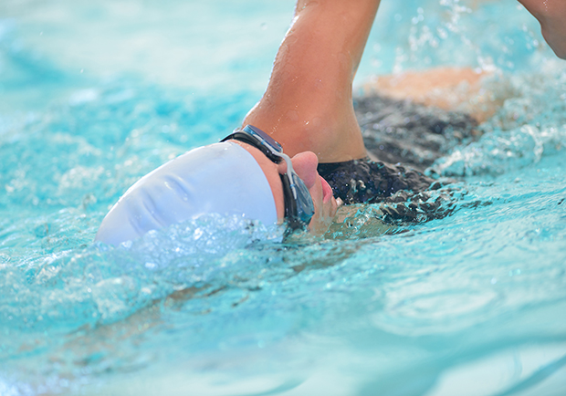

Swimming is a hobby that can last a lifetime—plus, it’s a great way to get a whole-body workout, regardless of the season.
As a kid, as soon as school was out and temperatures started to rise, the first thing I wanted to do was jump in a body of water. It didn’t matter if it was the lake or the neighborhood pool—I just wanted to swim. But now as an adult, there are even more reasons I enjoy it. Here’s why I still love to swim:
I love being outside in the summer. To me, being in or near water helps to reduce feelings of stress—even just listening to the sound of water is soothing. Swimming is a great way to enjoy fresh air, sunshine,and water all at the same time. Those things combined are great at instantly improving my mood—likely thanks to the sunshine vitamin, or vitamin D, as we know it. Vitamin D is produced in your skin in response to sun exposure and helps regulate mood, ease anxiety, and ward off depression.
Unless I’m in the shallow end of the pool, swimming requires constant movement to stay afloat. Because of that, swimming is an effective way to burn calories. Of course, it will vary depending on your pace and weight, but swimming for one hour can burn upwards of 493 calories, even at a slower pace. Plus,because of the constant resistance to muscles, it’s considered a cardiovascular and strength training workout in one.